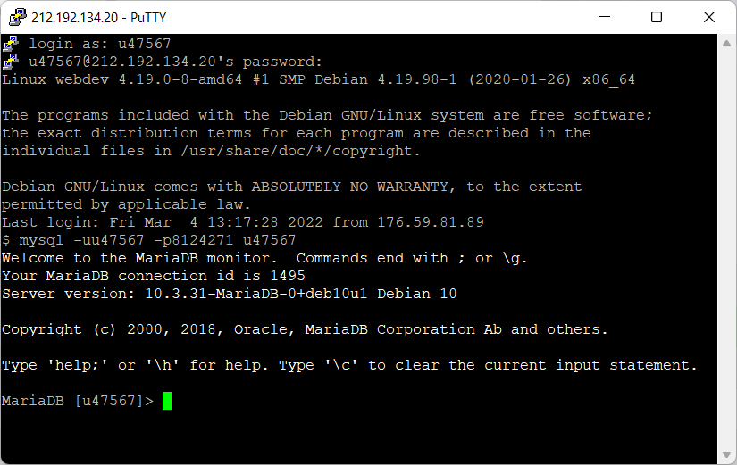
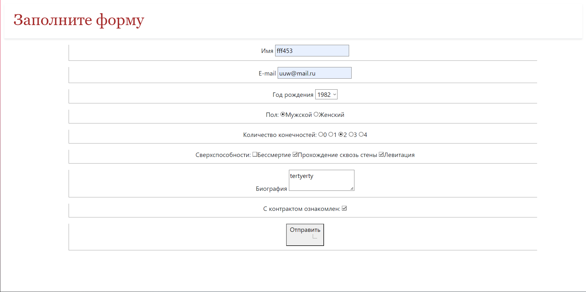
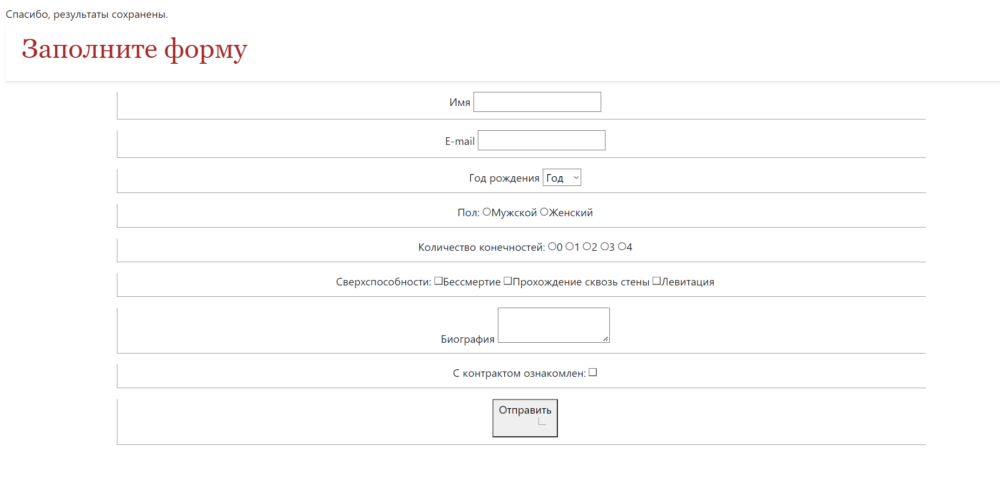
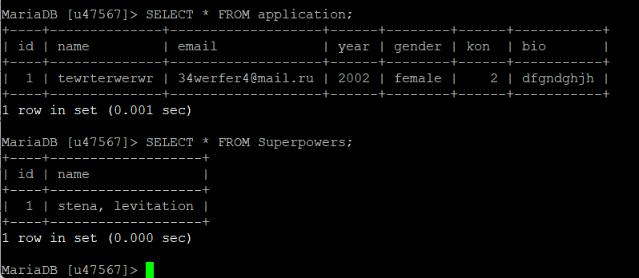
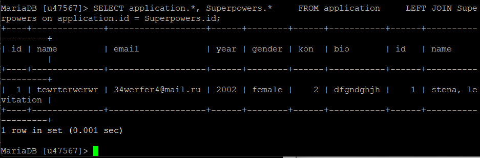

Подключение к базе данных

Создание таблиц application и Superpowers, хранящих данные формы (данные о суперспособностях хранятся отдельно).
Пример заполнения формы

После того, как предыдущая форма будет отправлена на сервер, на экране появится сообщение

Содержимое таблиц после отправки форм. Вывод содержимого сначала по отдельности, затем-одной таблицей с помощью LEFT JOIN

